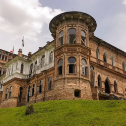

The name Batu Gajah, which literally translates to "stone elephant" in Malay, is likely derived from two large boulders along the Kinta River that resembled elephants. According to folklore, enormous stone elephants were created to frighten away the elephants that destroyed the sugar cane crops of the villagers. Before the Independence Day of Malaya, Batu Gajah was an ideal location for Chinese immigrants to reside and work due to its reputation for tin mining. This contributes to the considerable proportion of Chinese in Batu Gajah's population today.

History of Batu Gajah
